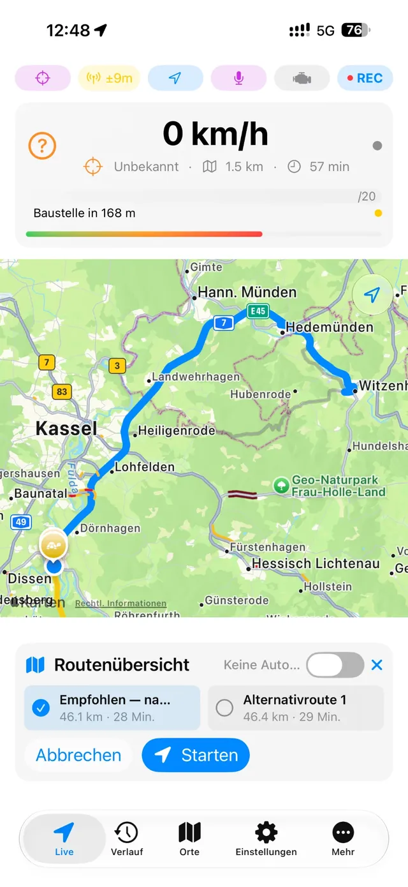
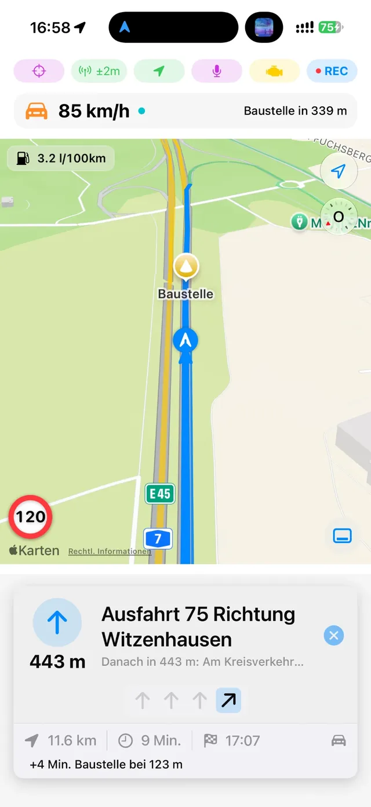
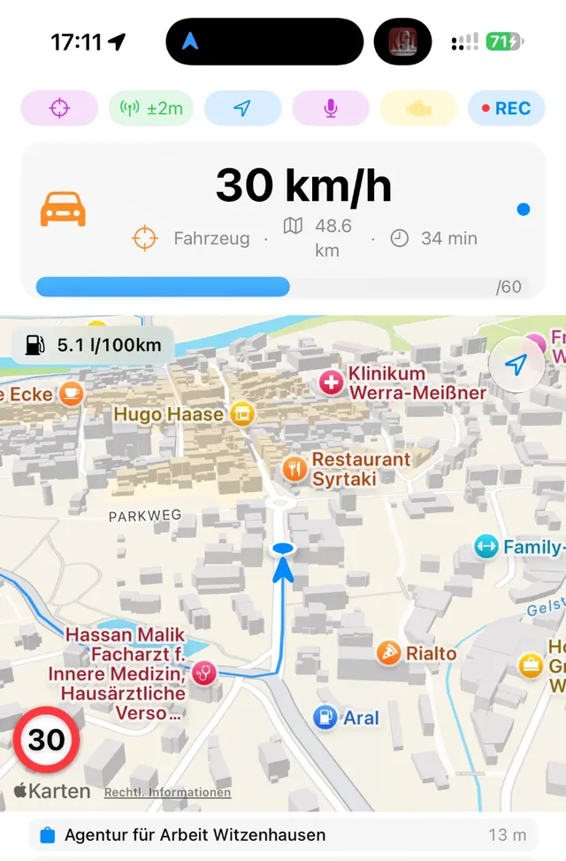
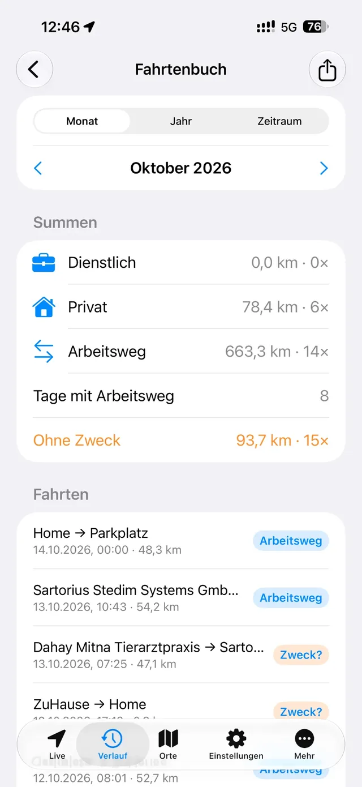
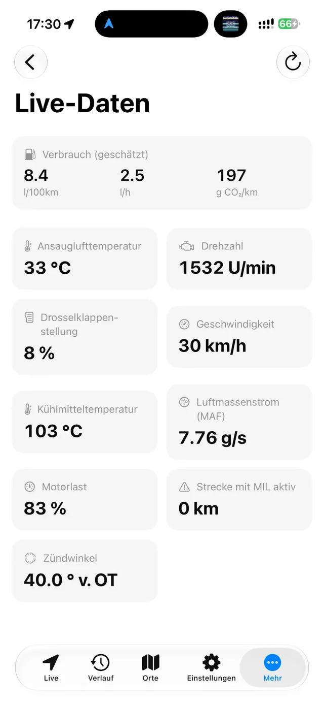
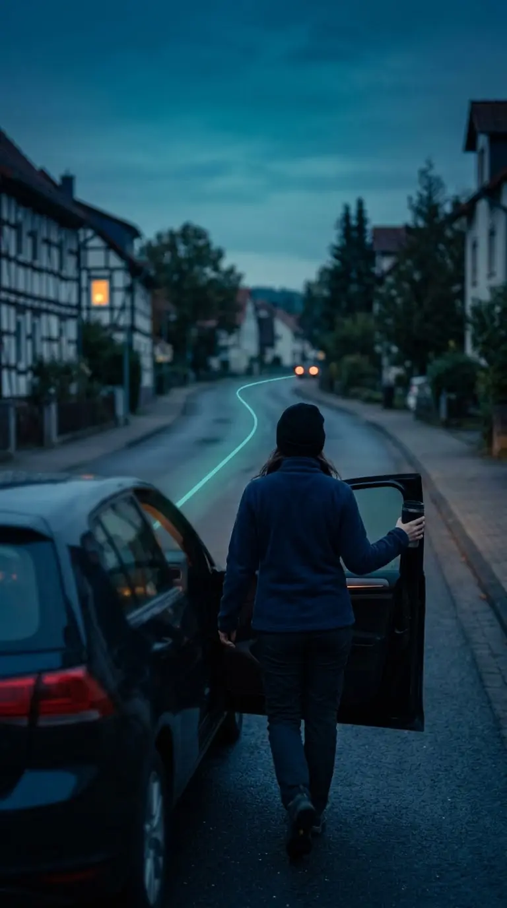
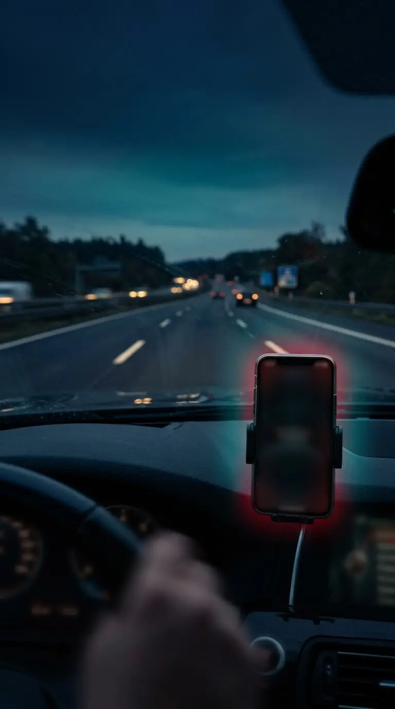

Navigation, traffic warnings, a logbook and vehicle diagnostics usually live in separate apps. Here they work together: the route knows about the jam, the logbook knows the route, and the OBD adapter knows your fuel consumption.
Navigation that sees ahead
Voice guidance even in the background, alternative routes, stopovers and destinations by voice. An optional map data set for Germany, Austria and Switzerland or for Tunisia adds offline routing, speed limits and lane guidance.

Warns you about what's ahead
Roadworks, closures and traffic jams on your route, plus German Weather Service warnings for your expected arrival time. You see the delay in minutes right away.

Records on its own
Trips start and end automatically, even with the display locked. The app recognises places where you stay for a while.

Logbook included
Business, private or commute, preset if you like. Export trips as GPX and reports as CSV or PDF.

Know your car BETA
With a Bluetooth OBD adapter you see live values and fuel consumption, and read fault codes in plain language.

CarPlayMap, lane hints and hazard alerts in your car.
Dynamic IslandLive Activity during your trip.
Siri and ShortcutsStart a trip, report a hazard, navigate home.
Control CenterA quick switch while you're out.
On the road
Less tech. More drive.

Get in. Drive off. Done.
No start button to remember. By evening, the trip is in your history with its route and duration.

Traffic jam? You'll know first.
You see early what's happening on your route and how much time it costs, so you can still react.
Knows your pace.
Arrival times learn from your own trips, right on your iPhone. The ECO analysis shows how smoothly you drove.
Privacy
Your routes belong to you.
No user account, no sign-up
No server where your trips end up
Trips, places, fuel stops and OBD data stay on your iPhone
Export and iCloud backup only when you start them
“An app that records where you are knows a great deal about you. That knowledge belongs to you and nobody else.”
It can't work entirely without the internet: for maps, routes, warnings and weather, the app queries external services and sends the map area they need. See which services
The story
Built by someone who needs it.
JourneyPulse began with a day in an unfamiliar city and the wish to look back that evening at everywhere you'd been. The tracker became a navigation app, and the navigation app became a companion for the car.
There's no corporation behind it, just one developer. Your feedback goes straight to him. He fixes bugs as quickly as possible and is happy to take requests.
For iPhone with iOS 26 or later. App in English and German.
Scan with your iPhone
Before you set off
Do I need an account?
No. There's no sign-up and no user account. Install the app and drive.
Does navigation work without internet?
Yes, with an optional map data set for Germany, Austria and Switzerland or for Tunisia, the app calculates routes on the device. Without map data it uses Apple Maps, which needs a connection.
How hard is it on the battery?
Background recording uses GPS and can increase battery use. Location tracking adapts to your movement, and the “important places only” profile is especially frugal.
Is the logbook accepted by tax authorities?
No. It's a private overview, for example for commuting allowances. It has no edit lock and no mandatory odometer reading.
Does the app work outside Germany?
Offline maps are available for Germany, Austria, Switzerland and Tunisia. Official traffic data and weather warnings come from German sources. Other limits are listed under Known Limitations.
Support JourneyPulse
All features are included with the purchase of the app. Donations are voluntary and unlock nothing. If you would still like to contribute, you can use SumUp or an in-app purchase under Settings → App → Guide & info → Support app.